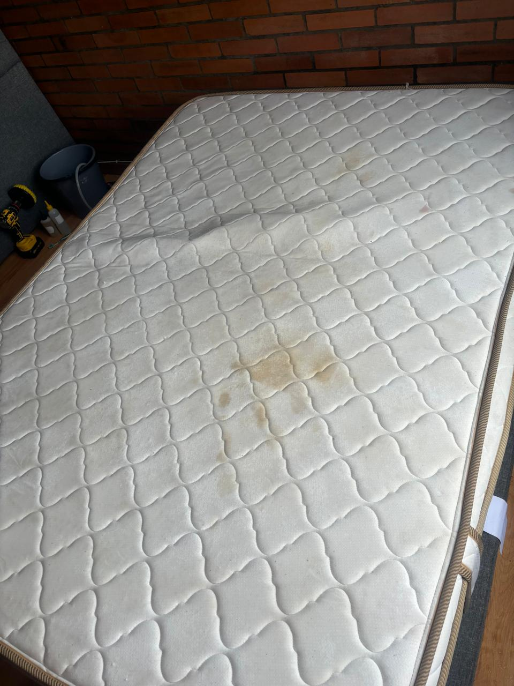
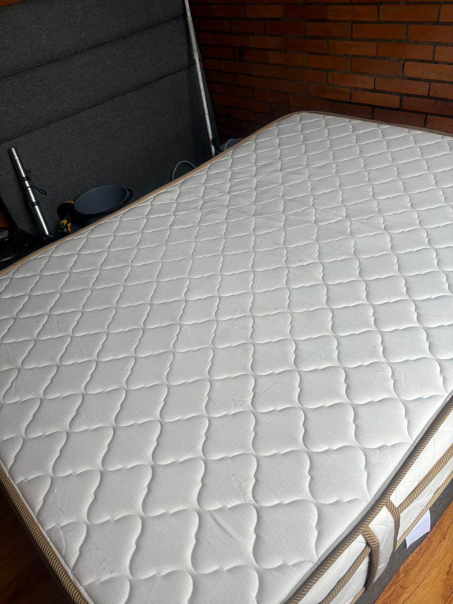

Limpieza profunda y desinfección de sofás, colchones y sillas de carro. Eliminamos manchas, ácaros y olores devolviéndole a tus espacios frescura real, no solo apariencia.


Tratamos cada superficie con productos y técnicas específicas según el material, sin dañar telas ni tapicerías.
Limpieza profunda de tapicería en tela y cuero, eliminando manchas, polvo y ácaros incrustados.
Higiene profunda para un descanso más limpio: eliminamos ácaros, hongos y olores acumulados.
Limpieza y desinfección de sillería vehicular, dejando el interior de tu carro fresco y libre de olores.
Un trabajo real, de principio a fin: así extraemos la suciedad que no se ve y dejamos tu mueble listo para volver a usar.
El mismo estándar en cada visita, sin importar el tamaño del trabajo.
Revisamos el tipo de tela o material y el estado del mueble antes de empezar.
Aplicamos productos especializados según el material, sin dañar fibras ni colores.
Eliminamos ácaros, bacterias y olores para un ambiente realmente limpio.
Secado controlado para que puedas volver a usar tu mueble en el menor tiempo posible.
Estos son trabajos hechos en casas de Bogotá. Mueve el control sobre cada foto para ver la diferencia que deja una limpieza profunda.